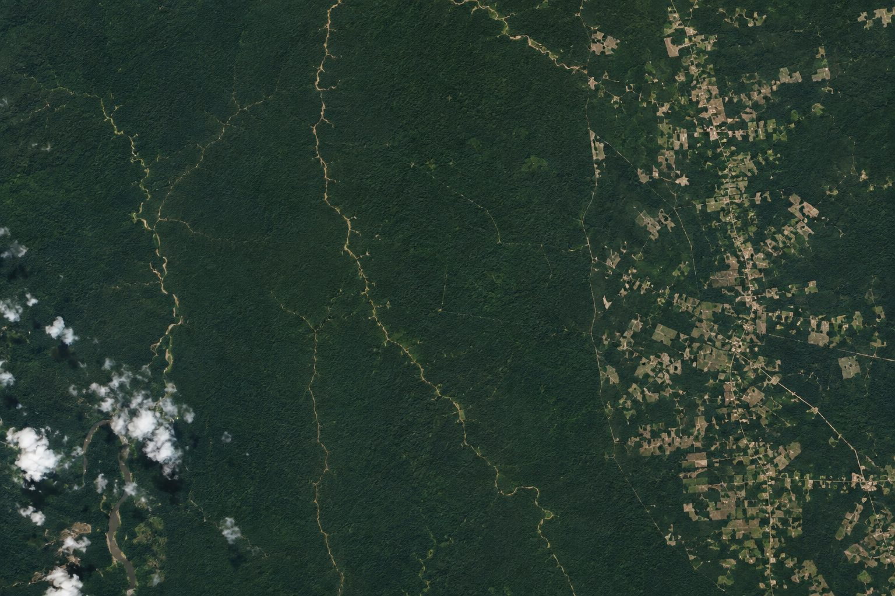

Baseline (Before) Forest Image
Prior orbital scan of the forest region

Current (After) Forest Image
Latest active satellite observation

Upload multi-temporal satellite imagery to calculate vegetation health, detect illegal deforestation, monitor reforestation growth, and evaluate ecological risk in real-time.
Prior orbital scan of the forest region
Latest active satellite observation
